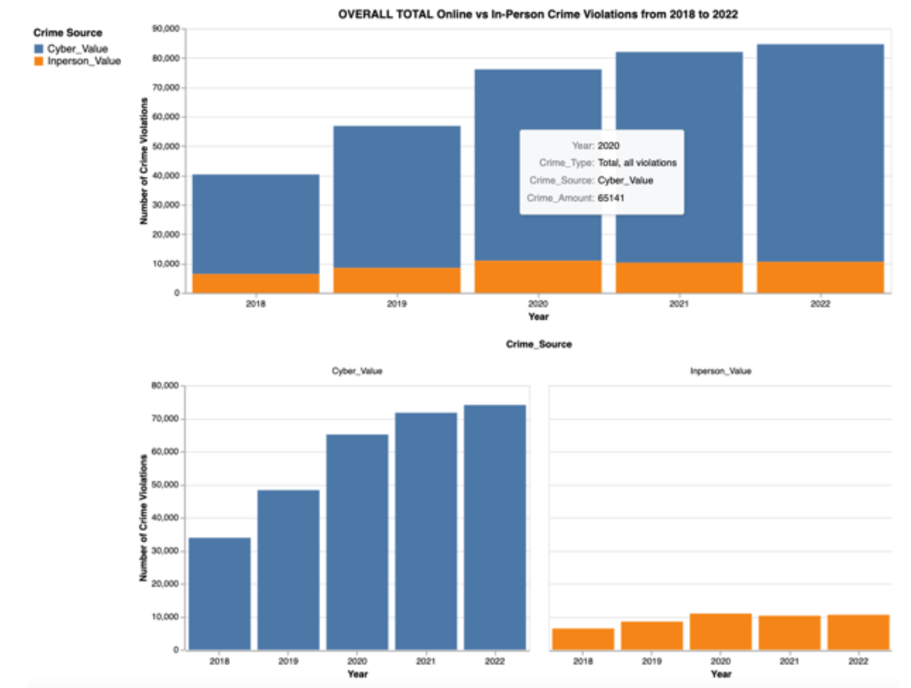

Projects
Below you will find overviews of project completed by ourselves. Feel free to reach out with any questions!
Navigating the Digital Pandemic: The Rise and Transformation of Cybercrime in Canada During COVID-19
Project Summary
This project examines the evolution of cybercrime in Canada during the COVID-19 pandemic. It analyzes trends and patterns in cybercriminal activities using a data-driven approach. The study focuses on how the pandemic and the subsequent increase in digital dependency influenced the nature and frequency of cybercrimes.
Statistics Performed
- Data Collection: Used datasets from Statistics Canada on police-reported cybercrime and organized crime.
- Standard Deviation Analysis: Compared the spread of cybercrime and in-person crime values across different years.
- Percentage Difference: Analyzed the percentage difference in crime rates pre-pandemic, during the pandemic, and post-pandemic.
- Top-K Analysis: Identified the most frequent crime types during the pandemic years.
- Linear Regression: Examined trends in cybercrime and in-person crime over time.
Key Findings
- Cybercrime significantly increased during the pandemic, while in-person crime showed a decrease.
- Fraud and extortion were the most prevalent types of cybercrime.
- Medium-sized cities experienced proportionately higher rates of cybercrime compared to larger cities.
- Quebec had some of the lowest rates of cybercrime, likely due to its strong focus on cybersecurity.
Images and Charts
Below are some key visualizations from the study:

Figure 1: Average Cyber and In-Person Crime Rates from 2018 to 2022

Figure 2: Overall Total Cyber and In-Person Crime Violations from 2018 to 2022
Figure 3: Matching Cyber and In-Person Crime Types Overview with Linear Regression from 2018 to 2022
eHotels: Database Management
Project Summary
This project required students to create an application to allow customers to book rooms from 5 different hotel companies. The application must include several different features such as: hotel ratings from 1 - 5, the price of the room, and contact information.
Technogies Used
- SQL & PostgreSQL: Used to create various databased to store hotel, customers, employee, and room information.
- HTML: Used to create a simple website which allowed for room booking, and creating accounts for customers and employees.
- JavaScript: Used to create interactive features on the website.
- CSS & BootStrap: Used to stylize and polish the website.
Key Features
- 5 Hotel chains
- 40 Hotels
- 200 Rooms
- Hotel Employees
- Hotel Customers
- Room Search
- Room/Hotel/Chain Updating
- Customer Payment
Images

Figure 4: Examples of Table Creation
Yatzy Game
Project Summary
This project is a digital version of the classic dice game Yatzy. Players roll dice up to three times per turn, select scoring categories, and compete for the highest score.
Technologies used
- HTML: Used to structure the game interface.
- CSS: Applied for styling the game interface to ensure a cohesive look with the portfolio.
- JavaScript: Implemented game logic, dice rolling, scoring calculations, and user interactions.
- PHP:In V2, PHP handles dice rolling, score calculation, game state, and leaderboard Management
Key Visual Design Features
The Yatzy game design follows a consistent visual system:
- Headers: Styled with a bold, large font to highlight sections.
- Buttons: Interactive elements with hover effects to improve user experience.
- Scoreboard: Clearly displays current scores for each category and total score.
- Dice Area: Visually represents the dice and their current state (selected/unselected).
- Color Palette: Uses a combination of light gray (#f4f4f4), dark gray (#333), medium gray (#555), and accents of red-orange (#ff6f61).
- Fonts: 'Trebuchet MS' for body text, Arial for headers and buttons.
Images
>
Figure 5: Initial State of Yahtzee game

Figure 6: After Rolling

Figure 7: End of Game
Yatzy Game - V2
Project Summary
This project is a digital version of the classic dice game Yatzy, this time using PHP. Players roll dice up to three times per turn, select scoring categories, and compete for the highest score.
Technologies used
- HTML: Used to structure the game interface.
- CSS: Applied for styling the game interface to ensure a cohesive look with the portfolio.
- JavaScript: Implemented game logic, and user interactions.
- PHP: Handles dice rolling, score calculation, game state, leaderboard management, and server interactions.
Key Visual Design Features
The Yatzy game design follows a consistent visual system:
- Headers: Styled with a bold, large font to highlight sections.
- Buttons: Interactive elements with hover effects to improve user experience.
- Scoreboard: Clearly displays current scores for each category and total score.
- Leaderboard: Displays the top 10 scores in a session, sorted from highest to lowest.
- Dice Area: Visually represents the dice and their current state (selected/unselected).
- Color Palette: Uses a combination of light gray (#f4f4f4), dark gray (#333), medium gray (#555), and accents of green.
- Fonts: 'Trebuchet MS' for body text, Arial for headers and buttons.
Images
Figure 8: Game & Leaderboard
Figure 9: Taking Extra Turn
Figure 10: Saving the Score
Hospital Triage Application
Project Summary
This project is a Hospital Triage application designed to help staff and patients better understand wait times in the emergency room. The application will be administered by the triage staff based on two dimensions: the severity of injuries and the length of time already in the queue. Administrators will see the full list of patients.
Technologies Used
- HTML: Structures the user interface for various modules such as patient registration, appointment scheduling, and staff management.
- CSS: Provides styling for a cohesive and professional look across all pages and forms.
- JavaScript: Enhances user interactions and implements dynamic features like form validation, real-time updates, and asynchronous requests.
- PHP: Handles server-side logic including data processing, database interactions, user authentication, and authorization.
- Postgres: Manages data storage, including patient information, triage details, and wait times.
Key Visual Design Features
The Hospital Triage application follows a consistent and user-friendly visual system:
- Headers: Styled with a professional, large font to clearly indicate different sections and modules.
- Buttons: Interactive elements with hover effects to enhance user experience and guide actions.
- Forms: Clean and intuitive design for patient registration, triage information entry, and other data entry tasks.
- Dashboard: Displays key metrics and notifications for staff, with a clear layout for easy navigation.
- Fonts: 'Arial' for body text to ensure readability, and 'Helvetica' for headers and buttons to maintain a modern and clean look.
Images
Admin Dashboard View: Overview of current wait times and patient statuses.
Patient Registration Form: Interface for entering new patient information.
Login for both the admin and the patients